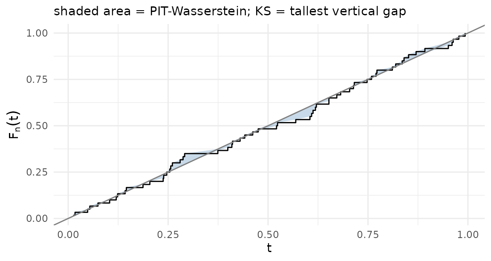

Significance testing for the PIT-Wasserstein metrics
significance-testing.Rmd
# library(pitw)
devtools::load_all()
#> ℹ Loading pitw
library(tidyverse)
#> ── Attaching core tidyverse packages ──────────────────────── tidyverse 2.0.0 ──
#> ✔ dplyr 1.2.1 ✔ readr 2.2.0
#> ✔ forcats 1.0.1 ✔ stringr 1.6.0
#> ✔ ggplot2 4.0.4 ✔ tibble 3.3.1
#> ✔ lubridate 1.9.5 ✔ tidyr 1.3.2
#> ✔ purrr 1.2.2
#> ── Conflicts ────────────────────────────────────────── tidyverse_conflicts() ──
#> ✖ readr::edition_get() masks testthat::edition_get()
#> ✖ dplyr::filter() masks stats::filter()
#> ✖ dplyr::lag() masks stats::lag()
#> ✖ readr::local_edition() masks testthat::local_edition()
#> ℹ Use the conflicted package (<http://conflicted.r-lib.org/>) to force all conflicts to become errors
set.seed(101)This vignette derives null distributions for the three PIT-Wasserstein metrics, so that an observed value can be reported with a -value rather than only as a point estimate.
The short version: these are Kolmogorov–Smirnov tests with a different norm. If that sentence is already enough, Section 1 explains it and Sections 3–5 give the three nulls. Every analytical claim is checked against simulation in the chunk that follows it; the simulation is the evidence, the algebra is the explanation.
1. Why a Brownian bridge?
This is the part that is least intuitive, so it is worth going slowly. Nothing in this section is specific to our metrics — it is the standard theory behind the Kolmogorov–Smirnov test, and our metrics are a variant of it.
1a. The empirical process
Suppose a forecaster is perfectly calibrated. Then its PIT values are independent draws from . Whatever the predictive distributions were — normal, gamma, wildly heteroscedastic — the PIT transform has thrown all of that away. We are left with the single, universal question: does this sample of numbers look uniform?
Form the empirical CDF and compare it to the CDF it should have, which is . The empirical process is the scaled gap between them:
Three facts about this object, each easy to believe:
- At any fixed , , so has mean and variance , and by the CLT it is asymptotically normal.
- At two points , the covariance works out as .
- At the ends, exactly — the empirical CDF is pinned to 0 and 1 at the edges, whatever the sample.
A Gaussian process with mean zero, covariance and tied down at both ends is the standard Brownian bridge . That is all the Brownian bridge is here: the limiting shape of the gap between the empirical CDF of the PIT values and the diagonal. It is Brownian motion conditioned to return to zero at , and the “conditioned to return” is fact 3 — the empirical CDF has nowhere else to end up.
So:
# The empirical process of uniform PIT values, for increasing n.
tibble(n = c(20L, 100L, 1000L)) |>
mutate(draw = map(n, ~ {
u <- sort(runif(.x))
tibble(t = u, alpha = sqrt(.x) * (seq_along(u) / .x - u))
})) |>
unnest(draw) |>
ggplot(aes(t, alpha)) +
geom_hline(yintercept = 0, colour = "grey70") +
geom_step(linewidth = 0.3) +
facet_wrap(~ n, labeller = label_both) +
labs(x = "t", y = expression(alpha[n](t))) +
theme_minimal()
The path gets rougher as grows but its vertical scale does not change: that is the doing its job. The limiting object is the same in all three panels.
1b. Every goodness-of-fit statistic is a norm on this process
Once you accept that the gap converges to , every classical goodness-of-fit test is just a choice of how to summarise a function into one number — and the continuous mapping theorem hands you the limit for free:
| Test | Statistic | Limit |
|---|---|---|
| Kolmogorov–Smirnov | ||
| Cramér–von Mises | ||
| Anderson–Darling | weighted version | |
| PIT-Wasserstein |
KS takes the worst single point (). Cramér–von Mises takes the mean square (). Ours takes the mean absolute gap — the norm — which is the area between the empirical CDF and the diagonal. That area is exactly the 1-Wasserstein distance between the PIT distribution and the uniform, which is why the metric is called what it is.
So the metric is not exotic. It sits in the same family as the tests everyone already trusts, and it has a null for exactly the same reason they do. The practical differences are the familiar -versus- ones: ours uses the whole discrepancy rather than its worst point, so it is less sensitive to a single outlying prediction and more sensitive to a small bias sustained across the whole range.
# The same empirical process summarised three ways.
u <- sort(runif(60))
tibble(t = u, Fn = seq_along(u) / 60) |>
ggplot(aes(t)) +
geom_ribbon(aes(ymin = pmin(Fn, t), ymax = pmax(Fn, t)),
fill = "steelblue", alpha = 0.3) +
geom_step(aes(y = Fn)) +
geom_abline(slope = 1, intercept = 0, colour = "grey50") +
labs(x = "t", y = expression(F[n](t)),
subtitle = "shaded area = PIT-Wasserstein; KS = tallest vertical gap") +
theme_minimal()
1c. Where the analogy keeps paying
Two further places where “it is a KS test” is the right instinct, both of which we will use:
- Distribution-free. The null depends on and on nothing else — not on the predictive family, not on the units, not on the heteroscedasticity. Same reason as KS: the PIT transform has already removed all of it.
- Estimating a parameter changes the null. If you estimate something from the same data before testing, the KS critical values are wrong and you need Lilliefors’ table instead. Our bias adjustment is exactly that step, and it has exactly that consequence — see Section 5.
2. The three metrics, and the three hypotheses
Given PIT values with order statistics and uniform plotting positions , we use one statistic
and one signed variant, in which the absolute value is replaced by a weight that is in the lower half of the distribution and in the upper, so that over- and under-dispersion cancel rather than accumulate:
The bias adjustment estimates a single location shift in the link scale, for predictive medians , applies it to the observations, and re-computes the PITs. Write for the result. The three metrics are then
| Metric | Definition | |
|---|---|---|
| the PIT values are iid | ||
| dispersion is correct, location arbitrary | ||
| shape is correct, location arbitrary |
for baseline: it is the omnibus test, directly analogous to KS, and the other two refine it. and , positive for an over-confident estimator.
The nulls are nested — each is strictly weaker than the one before — so the three read as a diagnosis rather than as three separate tests. Section 7 tabulates how.
# Row-wise metrics on a matrix of PIT values: one replicate per row.
pit_metrics <- function(v) {
n <- ncol(v)
s <- t(apply(v, 1, sort))
r <- matrix(seq(0.5 / n, 1 - 0.5 / n, length.out = n), nrow(v), n, byrow = TRUE)
list(W = rowMeans(abs(r - s)),
D = rowMeans((r - s) * sign(0.5 - r)))
}
null_pit <- function(n, reps = 4000) matrix(runif(n * reps), reps, n)3. The null of B_pit: an explicit formula
is the norm of the empirical process, so
Unlike the KS limit this one is not in every textbook, but it is known in closed form. Johnson & Killeen (1983) give the CDF of as a rapidly convergent series,
where
is the Airy function,
is the
th
zero of
,
and
.
This is implemented as p_l1_bridge() and
q_l1_bridge(); nothing beyond base R’s Bessel functions is
needed, since
on the positive axis is a modified Bessel function in disguise.
The mean of the limit is known exactly to be , which gives a free and rather demanding check on the implementation:
tibble(
quantity = c("mean", "q95", "q99"),
series = c(integrate(function(x) 1 - p_l1_bridge(x), 0, 5,
subdivisions = 500L)$value,
q_l1_bridge(0.95), q_l1_bridge(0.99)),
theory = c(sqrt(2 * pi) / 8, NA, NA)
)
#> # A tibble: 3 × 3
#> quantity series theory
#> <chr> <dbl> <dbl>
#> 1 mean 0.313 0.313
#> 2 q95 0.582 NA
#> 3 q99 0.752 NASo the 5% test is
,
and b_pit_significance() returns the exact
-value.
Checking the whole thing against the finite-sample statistic:
map_dfr(c(25L, 50L, 100L, 400L), function(n) {
b <- pit_metrics(null_pit(n))$W
tibble(n,
mean_sqrt_n = sqrt(n) * mean(b),
theory = sqrt(2 * pi) / 8,
q95_sqrt_n = sqrt(n) * quantile(b, 0.95),
size_0.05 = mean(b_pit_significance(b, n)$p_value < 0.05))
})
#> # A tibble: 4 × 5
#> n mean_sqrt_n theory q95_sqrt_n size_0.05
#> <int> <dbl> <dbl> <dbl> <dbl>
#> 1 25 0.311 0.313 0.582 0.05
#> 2 50 0.312 0.313 0.573 0.0455
#> 3 100 0.314 0.313 0.582 0.0505
#> 4 400 0.313 0.313 0.585 0.052Both and are flat in , confirming the scaling, and the test holds its nominal size.
Note a trap worth recording: Takács (1993) gives series for the norm of Brownian motion, not of the bridge, and does not apply here. The bridge case is Johnson & Killeen.
4. The null of D_pit: exactly Gaussian
Writing , the signed metric is a linear functional of the same process,
A linear functional of a Gaussian process is Gaussian, so this limit is normal with mean zero, and its variance is a double integral against the bridge covariance:
giving the simplest null of the three:
This is where the family stops looking like KS: there is no signed variant of the supremum norm, because a supremum cannot cancel. Taking a signed integral is only available to us because we integrate.
# Simulate Brownian bridges and evaluate both limiting functionals directly.
sim_bridge <- function(reps = 2000, m = 1000) {
t <- seq_len(m) / m
incr <- matrix(rnorm(reps * m, sd = sqrt(1 / m)), reps, m)
w <- t(apply(incr, 1, cumsum)) # Wiener
b <- w - outer(w[, m], t) # bridge
wt <- matrix(sign(0.5 - t), reps, m, byrow = TRUE)
list(signed = rowMeans(b * wt), absolute = rowMeans(abs(b)))
}
bridge <- sim_bridge()
tibble(
quantity = c("Var(int w B)", "E|int |B||"),
simulated = c(var(bridge$signed), mean(bridge$absolute)),
theory = c(1 / 48, sqrt(2 * pi) / 8)
)
#> # A tibble: 2 × 3
#> quantity simulated theory
#> <chr> <dbl> <dbl>
#> 1 Var(int w B) 0.0205 0.0208
#> 2 E|int |B|| 0.314 0.313The signed functional matches closely. The absolute functional comes out slightly above : approximating on a finite grid is biased upward, because the discretisation cannot see the excursions that cross zero between grid points. The bias is and is a property of this check, not of the metric.
map_dfr(c(10L, 25L, 50L, 100L, 400L), function(n) {
d <- pit_metrics(null_pit(n))$D
tibble(n,
n_var_D = n * var(d),
theory = 1 / 48,
size_0.05 = mean(d_pit_significance(d, n)$p_value < 0.05))
})
#> # A tibble: 5 × 4
#> n n_var_D theory size_0.05
#> <int> <dbl> <dbl> <dbl>
#> 1 10 0.0217 0.0208 0.0875
#> 2 25 0.0204 0.0208 0.056
#> 3 50 0.0214 0.0208 0.0598
#> 4 100 0.0208 0.0208 0.055
#> 5 400 0.0211 0.0208 0.051The variance constant is attained essentially exactly from . The size is mildly inflated at very small — the normal approximation to a sum of order statistics converges from above — so for the closed-form critical value should be treated as approximate.
5. The null of U_pit: the Lilliefors step
is the same statistic as , applied to adjusted PIT values. It is tempting to reuse Section 3’s critical value. That is wrong, and wrong in a way that has a well-known precedent.
If you test normality with KS after estimating the mean and variance from the same data, the KS table over-states the critical value badly, because you have fitted the distribution to the sample and the fitted CDF hugs the data more closely than the true one would. Lilliefors’ correction is a different table for the same statistic. Our bias adjustment estimates one location parameter from the same data, and the consequence is identical.
What happens geometrically is that the adjustment removes one direction from the limiting bridge. Perturbing the location by moves each PIT value by to first order, and the median centring pins the process at , so the limit is the bridge with that direction projected out:
This has no published CDF, so u_pit_significance()
simulates the limit process once per session and caches it. It is still
distribution-free — it depends on
and nothing else — which is the property that matters.
# The limit process of section 5, compared to the unprojected bridge.
t <- seq_len(1000) / 1000
kap <- dnorm(qnorm(t)) / dnorm(0)
incr <- matrix(rnorm(4000 * 1000, sd = sqrt(1 / 1000)), 4000, 1000)
w <- t(apply(incr, 1, cumsum))
b <- w - outer(w[, 1000], t)
proj <- b - outer(b[, 500], kap)
tibble(
limit = c("B (unprojected)", "U (projected)"),
mean = c(mean(rowMeans(abs(b))), mean(rowMeans(abs(proj)))),
q95 = c(quantile(rowMeans(abs(b)), 0.95), quantile(rowMeans(abs(proj)), 0.95))
)
#> # A tibble: 2 × 3
#> limit mean q95
#> <chr> <dbl> <dbl>
#> 1 B (unprojected) 0.311 0.569
#> 2 U (projected) 0.237 0.386and against the finite-sample adjusted metric, with genuinely heteroscedastic calibrated predictions:
adjusted_pits <- function(n, reps, kappa) {
mu <- matrix(rnorm(n * reps, 10, 2), reps, n)
sc <- matrix(exp(rnorm(n * reps, 0, kappa)), reps, n)
x <- matrix(rnorm(n * reps, mu, sc), reps, n)
b <- apply(mu - x, 1, median)
pnorm(x + b, mu, sc)
}
pmap_dfr(crossing(n = c(25L, 76L, 400L), kappa = c(0, 0.5)),
function(n, kappa) {
u <- pit_metrics(adjusted_pits(n, 2000, kappa))$W
tibble(n, kappa,
q95_U = quantile(u, 0.95),
q95_B = q_l1_bridge(0.95) / sqrt(n),
ratio = quantile(u, 0.95) / (q_l1_bridge(0.95) / sqrt(n)),
size = mean(u_pit_significance(u, n)$p_value < 0.05))
})
#> # A tibble: 6 × 6
#> n kappa q95_U q95_B ratio size
#> <int> <dbl> <dbl> <dbl> <dbl> <dbl>
#> 1 25 0 0.0742 0.116 0.637 0.0385
#> 2 25 0.5 0.0751 0.116 0.645 0.0415
#> 3 76 0 0.0429 0.0668 0.643 0.044
#> 4 76 0.5 0.0436 0.0668 0.654 0.0435
#> 5 400 0 0.0194 0.0291 0.667 0.0515
#> 6 400 0.5 0.0190 0.0291 0.653 0.0475Two things to take from that table. The 5% critical value for is a stable two thirds of the one for , at every and at both levels of heteroscedasticity — the stability across is the evidence that the adjusted null is still distribution-free. And using Section 3’s critical value for would be badly conservative: at , a of carries against the baseline null and against the correct one.
bind_rows(
b_pit_significance(0.05, 76) |> transmute(null = "baseline (wrong here)", p_value),
u_pit_significance(0.05, 76) |> transmute(null = "adjusted (correct)", p_value)
)
#> # A tibble: 2 × 2
#> null p_value
#> <chr> <dbl>
#> 1 baseline (wrong here) 0.165
#> 2 adjusted (correct) 0.0222The adjustment is free for and costly for . is already orthogonal to a location shift, so there is no direction left for the adjustment to remove and its null is either way. This asymmetry is worth remembering when choosing which statistic to lead with.
6. Where the adjustment has to live
The null above is only useful if the adjustment is the one we actually want, and there is a real constraint here worth stating.
6a. Not in PIT space
A natural idea is to adjust in PIT space — subtracting a centring statistic from — since an adjustment that is a function of the alone is automatically distribution-free. It does not work.
Bias is a location error in -space. An -space shift becomes a heterogeneous shift in probit space, so a single common probit shift over-corrects confident predictions and under-corrects uncertain ones. Under homoscedasticity the two coincide; under heteroscedasticity they diverge, and the symptom is a loss of the log-calibration symmetry of the metric.
That symmetry is a theorem, not an observation. With no bias and constant the probit-transformed PIT values are exactly with , so the PIT CDF is and
Inverting a monotone function reflects its graph in the diagonal, which preserves the area between graph and diagonal. So is exactly invariant under : an estimator twice too wide and one twice too narrow score identically. Any observed asymmetry is an artefact of the adjustment.
asymmetry <- function(c_cal, n = 2000, reps = 400) {
b <- runif(reps, -1, 1)
k <- runif(reps, 0, 2)
e <- matrix(rnorm(n * reps), reps, n) + b
sc <- matrix(rlnorm(n * reps, log(c_cal), sqrt(log(k^2 + 1))), reps, n)
z <- -e / sc
c(link_space = mean(pit_metrics(pnorm((-e + rowMeans(e)) / sc))$W),
probit_mean = mean(pit_metrics(pnorm(z - rowMeans(z)))$W),
probit_med = mean(pit_metrics(pnorm(z - apply(z, 1, median)))$W))
}
hi <- asymmetry(2); lo <- asymmetry(0.5)
tibble(adjustment = names(hi), U_at_c_2 = hi, U_at_c_half = lo,
asymmetry_pct = 100 * (hi - lo) / ((hi + lo) / 2))
#> # A tibble: 3 × 4
#> adjustment U_at_c_2 U_at_c_half asymmetry_pct
#> <chr> <dbl> <dbl> <dbl>
#> 1 link_space 0.0867 0.0854 1.52
#> 2 probit_mean 0.0928 0.155 -50.3
#> 3 probit_med 0.0832 0.0981 -16.4The link-scale adjustment used by pit_w() is symmetric
to within Monte Carlo error; the probit alternatives are not. This is a
genuine constraint, not a tuning problem: an adjustment that is
a function of the
alone cannot know the
,
so a trivially distribution-free null and exact bias-invariance under
heteroscedasticity cannot both hold. We keep bias-invariance
and pay for the null in Section 5.
6b. And it leaves D_pit untouched
adjusted_null <- function(n, bias, kappa, reps = 4000) {
e <- matrix(rnorm(n * reps), reps, n) + bias
sc <- if (kappa == 0) matrix(1, reps, n) else
matrix(rlnorm(n * reps, 0, sqrt(log(kappa^2 + 1))), reps, n)
d <- pit_metrics(pnorm((-e + rowMeans(e)) / sc))$D
tibble(n, bias, kappa, n_var_D = n * var(d),
size = mean(d_pit_significance(d, n)$p_value < 0.05))
}
pmap_dfr(crossing(n = c(100L, 400L), bias = c(0, 1), kappa = c(0, 0.5, 2)),
adjusted_null) |>
mutate(theory = 1 / 48)
#> # A tibble: 12 × 6
#> n bias kappa n_var_D size theory
#> <int> <dbl> <dbl> <dbl> <dbl> <dbl>
#> 1 100 0 0 0.0208 0.05 0.0208
#> 2 100 0 0.5 0.0223 0.0592 0.0208
#> 3 100 0 2 0.0328 0.122 0.0208
#> 4 100 1 0 0.0206 0.0475 0.0208
#> 5 100 1 0.5 0.0231 0.062 0.0208
#> 6 100 1 2 0.0330 0.121 0.0208
#> 7 400 0 0 0.0207 0.0478 0.0208
#> 8 400 0 0.5 0.0237 0.067 0.0208
#> 9 400 0 2 0.0347 0.127 0.0208
#> 10 400 1 0 0.0205 0.048 0.0208
#> 11 400 1 0.5 0.0244 0.0703 0.0208
#> 12 400 1 2 0.0328 0.122 0.0208With the null survives the adjustment exactly, with or without bias: stays at and the test holds nominal size. Bias-invariance costs nothing here.
With the variance inflates and does not shrink with , so it is an asymptotic effect rather than a small-sample artefact. The next section explains why that is not a defect.
7. What exactly is the null hypothesis?
The inflation above is not size distortion, because is not a calibrated estimator, even when the median dispersion is exactly right. A scale mixture of normals is heavier-tailed than a normal, so some predictions are over-confident and others under-confident, and the PIT values are not uniform:
map_dfr(c(0, 0.25, 0.5, 1, 2), function(k) {
n <- 5000; reps <- 200
e <- matrix(rnorm(n * reps), reps, n)
sc <- if (k == 0) matrix(1, reps, n) else
matrix(rlnorm(n * reps, 0, sqrt(log(k^2 + 1))), reps, n)
u <- pnorm(-e / sc)
tibble(kappa = k,
E_B_pit = mean(pit_metrics(u)$W),
tail_mass = mean(u < 0.05 | u > 0.95)) # uniform => 0.10
})
#> # A tibble: 5 × 3
#> kappa E_B_pit tail_mass
#> <dbl> <dbl> <dbl>
#> 1 0 0.00453 0.100
#> 2 0.25 0.00571 0.116
#> 3 0.5 0.0115 0.147
#> 4 1 0.0253 0.200
#> 5 2 0.0411 0.253So for is not “the median predictive width is correct”. It is PIT uniformity, which in this simulation family requires the dispersion ratio and .
It is worth being precise about what represents. The failure is not heterogeneity of as such — if the stated uncertainty varied in step with the realised per-prediction error the PIT values would be uniform and the estimator perfectly calibrated, which is what a good heteroscedastic model achieves. Here varies independently of the realised error, so what is penalised is spread–error decoupling: uncertainty that varies without being informative.
8. Reading the three tests together
The metrics respond to quite differently, and the contrast is useful rather than inconvenient:
sweep_c <- function(c_cal, kappa, n = 20000, reps = 100) {
e <- matrix(rnorm(n * reps), reps, n)
sc <- if (kappa == 0) matrix(c_cal, reps, n) else
matrix(rlnorm(n * reps, log(c_cal), sqrt(log(kappa^2 + 1))), reps, n)
m <- pit_metrics(pnorm((-e + rowMeans(e)) / sc))
tibble(c_cal, kappa, U = mean(m$W), D = mean(m$D))
}
pmap_dfr(crossing(c_cal = c(0.5, 0.8, 1, 1.25, 2), kappa = c(0, 0.5, 1, 2)),
sweep_c) |>
pivot_wider(names_from = c_cal, values_from = c(U, D)) |>
print(width = Inf)
#> # A tibble: 4 × 11
#> kappa U_0.5 U_0.8 U_1 U_1.25 U_2 D_0.5 D_0.8 D_1 D_1.25
#> <dbl> <dbl> <dbl> <dbl> <dbl> <dbl> <dbl> <dbl> <dbl> <dbl>
#> 1 0 0.102 0.0353 0.00154 0.0353 0.102 0.102 0.0353 0.0000230 -0.0353
#> 2 0.5 0.0950 0.0322 0.0110 0.0328 0.0951 0.0950 0.0322 -0.0000435 -0.0320
#> 3 1 0.0843 0.0309 0.0251 0.0370 0.0848 0.0843 0.0278 -0.000199 -0.0282
#> 4 2 0.0720 0.0424 0.0410 0.0474 0.0776 0.0715 0.0236 -0.000145 -0.0237
#> D_2
#> <dbl>
#> 1 -0.102
#> 2 -0.0951
#> 3 -0.0842
#> 4 -0.0715is zero at for every — the root does not move — whereas at rises steadily with . The mechanism is that a lognormal scale mixture is leptokurtic: excess mass at the edges and at the centre with a deficit in between, so the PIT histogram under is W-shaped rather than U-shaped. weights edge and centre departures with opposite signs so they cancel; the absolute-value metrics accumulate them.
Because the three nulls are nested, the three tests read down as a diagnosis. Rather than assert the pattern, here is the rejection rate of each test under five known failure modes, , nominal 5%:
scenario <- function(label, bias, c_cal, kappa, n = 200L, reps = 400) {
e <- matrix(rnorm(n * reps), reps, n) + bias
sc <- if (kappa == 0) matrix(c_cal, reps, n) else
matrix(rlnorm(n * reps, log(c_cal), sqrt(log(kappa^2 + 1))), reps, n)
B <- pit_metrics(pnorm(-e / sc))$W # unadjusted
m <- pit_metrics(pnorm((-e + rowMeans(e)) / sc)) # adjusted
tibble(label, bias, c_cal, kappa,
B_pit = mean(b_pit_significance(B, n)$p_value < 0.05),
D_pit = mean(d_pit_significance(m$D, n)$p_value < 0.05),
U_pit = mean(u_pit_significance(m$W, n)$p_value < 0.05))
}
pmap_dfr(tribble(
~label, ~bias, ~c_cal, ~kappa,
"calibrated", 0, 1, 0,
"pure bias", 1, 1, 0,
"over-confident", 0, 0.7, 0,
"over-conservative", 0, 1.3, 0,
"spread-error decoupling", 0, 1, 1,
"bias + over-conservative", 1, 1.3, 0
), scenario)
#> # A tibble: 6 × 7
#> label bias c_cal kappa B_pit D_pit U_pit
#> <chr> <dbl> <dbl> <dbl> <dbl> <dbl> <dbl>
#> 1 calibrated 0 1 0 0.0525 0.0475 0.0225
#> 2 pure bias 1 1 0 1 0.0475 0.0175
#> 3 over-confident 0 0.7 0 0.97 1 1
#> 4 over-conservative 0 1.3 0 0.665 0.99 0.98
#> 5 spread-error decoupling 0 1 1 0.192 0.09 0.672
#> 6 bias + over-conservative 1 1.3 0 1 0.988 0.965which gives the read-down:
| Reading | |||
|---|---|---|---|
| not rejected | — | — | calibrated |
| rejected | not rejected | not rejected | pure location error (bias) |
| — | rejected | rejected | dispersion error; sign of gives the direction |
| — | not rejected | rejected | right median width, wrong shape — skew, tails, or spread–error decoupling |
| rejected | rejected | rejected | location and dispersion error |
Note the row that is easy to get wrong: a genuine dispersion error moves both and , because is undirected and accumulates any departure. What distinguishes a width error from a shape error is not whether fires but whether does alongside it.
Note also that in the spread–error decoupling row the adjusted test is the more powerful one: rejects about 69% of the time where the omnibus manages 19%. Paying for a tighter null buys power, once a location error is no longer something you need the test to notice.
Two cautions. The three statistics come from the same PIT values and are not independent, so this is a read-down from a single rejection and not three tests each at the 5% level. And the shape row is evidence of some residual departure — a wrong distributional family or tail misspecification would also land there — rather than an identification of .
9. In practice
set.seed(2024)
n <- 120
mu <- rnorm(n, 10, 2)
sc <- rep(1, n)
x <- rnorm(n, mu + 0.8, 1.4) # biased AND over-confident
s <- pit_w(x, mu, sc, dist = "norm", link = "identity")
bind_rows(
b_pit_significance(s$B_pit, n) |> transmute(metric = "B_pit", value = B_pit, p_value),
d_pit_significance(s$D_pit, n) |> transmute(metric = "D_pit", value = D_pit, p_value),
u_pit_significance(s$U_pit, n) |> transmute(metric = "U_pit", value = U_pit, p_value)
)
#> # A tibble: 3 × 3
#> metric value p_value
#> <chr> <dbl> <dbl>
#> 1 B_pit 0.227 1.67e-15
#> 2 D_pit 0.0351 7.72e- 3
#> 3 U_pit 0.0369 3.79e- 2rejects overwhelmingly, so something is wrong. rejects and is positive, so the predictive distributions are too narrow. rejects too, which — per the table above — is what a width error looks like rather than an additional finding. The diagnosis is a biased, over-confident forecaster of the right distributional family, which is how the data were generated.
It is worth noticing how much larger is than the other two here ( against and ). That gap is the location error: the bias contributes almost all of the raw PIT departure, and the adjustment strips it out so that the remaining two statistics can speak about width and shape alone.
prediction_scores() additionally reports
n_predictions, so the three tests can be applied directly
to a table of scored forecasters.
10. Caveats
Independence. Every null here rests on the PIT values being independent. is the number of independent predictions. Overlapping forecast windows — rolling estimates, multi-horizon forecasts from one model run — violate this and inflate apparent significance. There is no correction built in; the honest options are to thin to non-overlapping predictions or to treat the -values as optimistic.
Small . The normal approximation is mildly anti-conservative below (empirical size around 8% at ). The two tests are better behaved because their reference distributions are not asymptotic normal approximations, but all three assume the limit has been reached.
Skewed predictive families. Constructing a
calibrated example outside log-symmetric families needs care,
independently of any of the above. For a scale family
with
,
placing predictions at
gives
,
which is uniform only if
— true for lnorm4, false for gamma4. The
correct placement solves
:
calibrated_locations <- function(qs, x0, kappa, qfn) x0 / qfn(1 - qs, 1, kappa)
qs <- seq(1, 199, 2) / 200
tibble(
placement = c("naive quantiles", "calibrated"),
B_pit = c(
pit_w(2.5, qgamma4(qs, 2.5, 0.5), 0.5, dist = "gamma4", link = "log")$B_pit,
pit_w(2.5, calibrated_locations(qs, 2.5, 0.5, qgamma4), 0.5,
dist = "gamma4", link = "log")$B_pit)
)
#> # A tibble: 2 × 2
#> placement B_pit
#> <chr> <dbl>
#> 1 naive quantiles 2.35e- 2
#> 2 calibrated 7.11e-17Use rather than for this kind of construction check: it asks the unconditional question and does not estimate anything from the sample.
Summary
- The PIT values of a calibrated forecaster are uniform, so the gap between their empirical CDF and the diagonal converges to a Brownian bridge. Every goodness-of-fit statistic is a norm on that gap; ours is the norm, where Kolmogorov–Smirnov is .
- , with an explicit CDF from Johnson & Killeen (1983): a 5% critical value of .
- exactly, attained from . Only an integral statistic admits a signed variant like this.
- The bias adjustment estimates a parameter from the same data, so needs its own null — the Lilliefors step. Its critical value is two thirds of ’s. The adjustment is free for , which is already orthogonal to a location shift.
- The adjustment must live in the link scale, not in PIT space, or bias-invariance under heteroscedasticity is lost.
- is PIT uniformity, which is stronger than “the median width is correct”: spread–error decoupling is an alternative, not a null.
- Report all three with their -values and read them down as a diagnosis, remembering that they are not independent of one another.